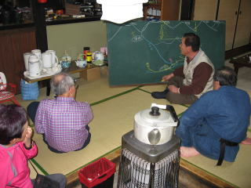

|
|||||||||||||||||||||||||||
|
|||||||||||||||||||||||||||
|
大日岳・野伏ヶ岳・猿ヶ馬場山スキー |
| 開 催 日 | ２００９年３月１４〜１６日 | |||
| リーダー | 徳永泰朗 | |||
| 報 告 者 | 徳永泰朗 | |||
| HP制作者 | 徳永泰朗 | |||
| 参加者数 | １２名 （会員９名、ゲスト３名） | |||
| 今回の山行はリーダーがＡＳＣ入会以来初めて自分の企画として計画した例会だった。これらの山域は名だたる豪雪地帯であり、特に野伏ヶ岳は過去において会の全国集会で先輩方が厳しい経験をされた記録もあるので情報収集など慎重に準備を進めた。 寡雪の今シーズン、雪不足を心配したが幸いにして１３日の昼ごろから１４日夕刻まで降雪が続き、この時期としてはまずまずのコンディションで楽しむことができた。 |
| １日目 ３月１４日（土） |
| 10：50高鷲スノーパークスキー場集合――10：50ゴンドラ頂上駅出発――11：50大日岳山頂12：05――12：20昼食12：30――13：05山麓駅――15：00宿舎 |
| A | ||
| 本日のメンバーはこの6名のみ。頂上に視界は ないと予測してスキーセンターでまず集合写真。 ハイ! チーズ。 |
高鷲スノーパークのゴンドラ終点から シール登行を開始。 |
 |
A | |
| 急斜面の凍結個所では転倒して 苦戦を余儀なくされる場面も・・・・。 |
歩行１時間ほどで山頂着。 今日は足慣らしでした。 |
| A | ||
| 粉雪を蹴立てて軽々と、しかも華麗に・・・・ |
山スキーの鉄則、絶対に転倒しないこと。 どのような斜面でもしっかりと板に乗って 雪を捕まえる。 |
| 今夜の宿は石徹白の民宿「おしたに」である。夕刻になると福井から、 京都から、地元飛騨からゲストも含め総勢12人の参加者が参集した。 |
| A | ||
| さまざまのナンバープレートの車がそろい踏み。 |
「おしたに」の料理がおいしいのは ＡＳＣでも評判である。 |
| A |  | |
| 夕食後、ご主人の熱心な野伏ヶ岳解説を承る。 | ストーブを囲みながら参加者も真剣に拝聴した。 |
| ２日目 ３月１５日（日） |
| 野伏ヶ岳 |
| 7：20宿舎発＝＝7：50白山中居神社発――8：20衣服調整――9：00（休憩）――9：40牧場跡――10：10（休憩）――10：50ダイレクト尾根――11：15（休憩）――12：18野伏ヶ岳山頂12：45――14：10分岐――14：48牧場跡――15：35白山中居神社 |
| A | ||
| 快晴の朝、「おしたに」前で 35歳から80歳まで全員集合。 |
一昨日来の恵みの雪がなかったら この長い林道をスキー板を担ぐことになったろう。 |
| A | ||
| 牧場跡に登り立つといよいよ野伏ヶ岳がくっきりと。 そして左手手前からはダイレクト尾根が伸びる。 |
春の日差しを浴びて・・・・山スキーに乾杯！ |
| A | ||
| ダイレクト尾根の急斜面をシール登行。 |
振り返れば重畳と連なる山々、 昨日立った大日岳の頂も・・・ |
| A |  |
|
| 3人のゲストも交えて賑やかな 集合写真、ハイ! ポーズ。 |
北東尾根の滑降 |
| ３日目 ３月１６日（月） |
| 猿ヶ馬場山 |
| 6：45宿舎発＝=8：18登山口発――8：45スキー装着――9：50（休憩）――10：50（休憩）――12：00（休憩）――12：35帰雲山――13：00（休憩）――13：57猿ヶ馬場山山頂――15：25帰雲山――17：25登山口 |
| A | ||
| 恵みの新雪も昨日の日曜日に相当 踏み荒らされていた。 |
標高1350ｍ地点あたりから望む山頂。 これから帰雲山へ回りこんでまだまだ遠いのだ。 |
| A | ||
| 荒らされ、腐った雪に滑りにくそう。 | 帰路のことを思うと心は急くが・・・・板が回らない。 |
| 雪の付いていない白川郷の藁屋根にも 夕べの帳が迫っていた。 |